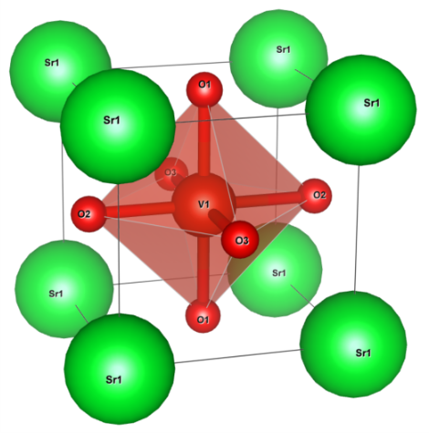

Downfolding with RESPACK (SrVO3)¶
Warning
This document was written for ver.1.x, and might include descriptions incompatible with the latest version. If you encounter some problem, see the release note of ver.2.0 and check the differences between ver.1.x and ver.2.0.
Note
This tutorial requires large computational resources or the long simulation time.
Crystal structure of SrVO3 (drawn by VESTA).
{kind=link}
SCF calculation of Quantum ESPRESSO¶
&CONTROL
calculation = 'scf'
pseudo_dir = './'
prefix = 'srvo3'
/
&SYSTEM
ibrav = 0
nat = 5
ntyp = 3
ecutwfc = 120.000000
ecutrho = 480.000000
occupations = 'tetrahedra_opt'
/
&ELECTRONS
mixing_beta = 0.3
/
CELL_PARAMETERS angstrom
3.842500 0.000000 0.000000
0.000000 3.842500 0.000000
0.000000 0.000000 3.842500
ATOMIC_SPECIES
Sr 87.620000 Sr_ONCV_PBE-1.0.upf
V 50.941500 V_ONCV_PBE-1.0.upf
O 15.999400 O_ONCV_PBE-1.0.upf
ATOMIC_POSITIONS crystal
Sr 0.000000 0.000000 0.000000
V 0.500000 0.500000 0.500000
O 0.500000 0.000000 0.500000
O 0.000000 0.500000 0.500000
O 0.500000 0.500000 0.000000
K_POINTS automatic
8 8 8 0 0 0
The pseudopotentials are downloaded from
http://www.quantum-simulation.org/potentials/sg15_oncv/upf/O_ONCV_PBE-1.0.upf
http://www.quantum-simulation.org/potentials/sg15_oncv/upf/Sr_ONCV_PBE-1.0.upf
http://www.quantum-simulation.org/potentials/sg15_oncv/upf/V_ONCV_PBE-1.0.upf
They are part of The SG15 Optimized Norm-Conserving Vanderbilt (ONCV) pseudopotentials. For the downfolding with RESPACK, we should use the norm-conserving pseudopotentials rather than the ultrasoft pseudopotentials or PAW.
The SCF calculation of the electronic charge is performed as follows:
$ mpirun -np 4 pw.x -in scf_srvo3.in
Wannierization¶
Next, we perform non-scf calculation for generating Bloch orbitals that are used in the wannierization.
&CONTROL
calculation = 'nscf'
pseudo_dir = './'
wf_collect = .true.
prefix = 'srvo3'
/
&SYSTEM
ibrav = 0
nat = 5
ntyp = 3
ecutwfc = 120.000000
ecutrho = 480.000000
occupations = 'tetrahedra_opt'
nbnd = 100
/
&ELECTRONS
/
CELL_PARAMETERS angstrom
3.842500 0.000000 0.000000
0.000000 3.842500 0.000000
0.000000 0.000000 3.842500
ATOMIC_SPECIES
Sr 87.620000 Sr_ONCV_PBE-1.0.upf
V 50.941500 V_ONCV_PBE-1.0.upf
O 15.999400 O_ONCV_PBE-1.0.upf
ATOMIC_POSITIONS crystal
Sr 0.000000 0.000000 0.000000
V 0.500000 0.500000 0.500000
O 0.500000 0.000000 0.500000
O 0.000000 0.500000 0.500000
O 0.500000 0.500000 0.000000
K_POINTS automatic
6 6 6 0 0 0
Then, run pw.x as
$ mpirun -np 4 pw.x -in nscf_respack.in
and convert outputs so that RESPACK can read them.
$ qe2respack.sh srvo3.save/
This program locates in the util/qe2respack/ directory of RESPACK.
Execute calc_wannier (in src/wannier/ of RESPACK) for the actual wannierization.
with the following input file:
&PARAM_CHIQW
Num_freq_grid = 1
flg_cRPA = 1
/
&PARAM_WANNIER
N_wannier = 3
Lower_energy_window = 11.0785
Upper_energy_window = 14.5440
N_initial_guess = 3
/
dxy 0.2 0.5 0.5 0.5
dyz 0.2 0.5 0.5 0.5
dzx 0.2 0.5 0.5 0.5
&PARAM_INTERPOLATION
N_sym_points = 6
/
0.000000 0.000000 0.000000
0.500000 0.000000 0.000000
0.500000 0.500000 0.000000
0.000000 0.000000 0.000000
0.500000 0.500000 0.500000
0.500000 0.000000 0.000000
&PARAM_VISUALIZATION
flg_vis_wannier = 1
ix_vis_min = 0
ix_vis_max = 1
iy_vis_min = 0
iy_vis_max = 1
iz_vis_min = 0
iz_vis_max = 1
/
&PARAM_CALC_INT
calc_ifreq = 1
ix_intJ_min = 0
ix_intJ_max = 0
iy_intJ_min = 0
iy_intJ_max = 0
iz_intJ_min = 0
iz_intJ_max = 0
/
$ calc_wannier < respack.in
(Optional) Check wannierization¶
If you want to check the quality of the wannierization, you can plot the original and the wannier-interpolated band structure simultaneously.
First, compute the band structure with the following input file:
&CONTROL
calculation = 'bands'
pseudo_dir = './'
prefix = 'srvo3'
/
&SYSTEM
ibrav = 0
nat = 5
ntyp = 3
ecutwfc = 120.000000
ecutrho = 480.000000
nbnd = 50
/
&ELECTRONS
/
CELL_PARAMETERS angstrom
3.842500 0.000000 0.000000
0.000000 3.842500 0.000000
0.000000 0.000000 3.842500
ATOMIC_SPECIES
Sr 87.620000 Sr_ONCV_PBE-1.0.upf
V 50.941500 V_ONCV_PBE-1.0.upf
O 15.999400 O_ONCV_PBE-1.0.upf
ATOMIC_POSITIONS crystal
Sr 0.000000 0.000000 0.000000
V 0.500000 0.500000 0.500000
O 0.500000 0.000000 0.500000
O 0.000000 0.500000 0.500000
O 0.500000 0.500000 0.000000
K_POINTS crystal
50
0.0000000000 0.0000000000 0.0000000000 1.0
0.0714285714 0.0000000000 0.0000000000 1.0
0.1428571429 0.0000000000 0.0000000000 1.0
0.2142857143 0.0000000000 0.0000000000 1.0
0.2857142857 0.0000000000 0.0000000000 1.0
0.3571428571 0.0000000000 0.0000000000 1.0
0.4285714286 0.0000000000 0.0000000000 1.0
0.5000000000 0.0000000000 0.0000000000 1.0
0.5000000000 0.0714285714 0.0000000000 1.0
0.5000000000 0.1428571429 0.0000000000 1.0
0.5000000000 0.2142857143 0.0000000000 1.0
0.5000000000 0.2857142857 0.0000000000 1.0
0.5000000000 0.3571428571 0.0000000000 1.0
0.5000000000 0.4285714286 0.0000000000 1.0
0.5000000000 0.5000000000 0.0000000000 1.0
0.4545454545 0.4545454545 0.0000000000 1.0
0.4090909091 0.4090909091 0.0000000000 1.0
0.3636363636 0.3636363636 0.0000000000 1.0
0.3181818182 0.3181818182 0.0000000000 1.0
0.2727272727 0.2727272727 0.0000000000 1.0
0.2272727273 0.2272727273 0.0000000000 1.0
0.1818181818 0.1818181818 0.0000000000 1.0
0.1363636364 0.1363636364 0.0000000000 1.0
0.0909090909 0.0909090909 0.0000000000 1.0
0.0454545455 0.0454545455 0.0000000000 1.0
0.0000000000 0.0000000000 0.0000000000 1.0
0.0384615385 0.0384615385 0.0384615385 1.0
0.0769230769 0.0769230769 0.0769230769 1.0
0.1153846154 0.1153846154 0.1153846154 1.0
0.1538461538 0.1538461538 0.1538461538 1.0
0.1923076923 0.1923076923 0.1923076923 1.0
0.2307692308 0.2307692308 0.2307692308 1.0
0.2692307692 0.2692307692 0.2692307692 1.0
0.3076923077 0.3076923077 0.3076923077 1.0
0.3461538462 0.3461538462 0.3461538462 1.0
0.3846153846 0.3846153846 0.3846153846 1.0
0.4230769231 0.4230769231 0.4230769231 1.0
0.4615384615 0.4615384615 0.4615384615 1.0
0.5000000000 0.5000000000 0.5000000000 1.0
0.5000000000 0.4545454545 0.4545454545 1.0
0.5000000000 0.4090909091 0.4090909091 1.0
0.5000000000 0.3636363636 0.3636363636 1.0
0.5000000000 0.3181818182 0.3181818182 1.0
0.5000000000 0.2727272727 0.2727272727 1.0
0.5000000000 0.2272727273 0.2272727273 1.0
0.5000000000 0.1818181818 0.1818181818 1.0
0.5000000000 0.1363636364 0.1363636364 1.0
0.5000000000 0.0909090909 0.0909090909 1.0
0.5000000000 0.0454545455 0.0454545455 1.0
0.5000000000 0.0000000000 0.0000000000 1.0
$ mpiexec -np 4 pw.x -in band_srvo3_r.in
&BANDS
prefix = "srvo3",
outdir = "./",
!filband = "band.dat"
!lsym = .true.
/
$ mpiexec -np 4 bands.x -in bands_srvo3.in
plot [][11:18] "bands.out.gnu" u 1:2 w p tit "Orig", 12.3116 tit "E_F", "dir-wan/dat.iband" u ($1*2.5731):2 tit "Wannier" w l

Dielectric matrix and Effective interaction¶
Next, we move on the calculation of the dielectric matrix with cRPA.
We use the program calc_chiqw (in src/calc_chiqw in RESPACK) as
$ mpiexec calc_chiqw < respack.in
where the input file is the same as above.
After we compute the dielectric matrix, we calculate the effective interaction \(U\) and \(J\) as
$ calc_w3d < respack.in
$ calc_j3d < respack.in
The output of these program should be transformed into the wannier90 format by using the utility program
respack2wan90.py in bin/ directory of triqs.
$ respack2wan90.py srvo3
The command-line argument ("srvo3" in this case) must be the same as seedname in the DCore input.
DMFT calculation¶
[model]
lattice = wannier90
seedname = srvo3
nelec = 1.0
ncor = 1
norb = 3
interaction = respack
bvec=[(1.627091,0.0,0.0),(0.0,1.627091,0.0),(0.0,0.0,1.627091)]
[system]
nk0 = 16
nk1 = 16
nk2 = 16
beta = 40.0
mu = 12.572260
with_dc = True
perform_tail_fit = True
fit_max_moment = 8
fit_min_w = 7.0
fit_max_w = 18.0
[impurity_solver]
name = TRIQS/cthyb
n_cycles{int} = 10000
n_warmup_cycles{int} = 10000
length_cycle{int} = 500
move_double{bool} = True
[control]
max_step = 8
[post.spectrum]
broadening = 0.1
nk_line = 50
knode=[(G,0.0,0.0,0.0),(X,0.5,0.0,0.0),(M,0.5,0.5,0.0),(G,0.0,0.0,0.0),(R,0.5,0.5,0.5),(X,0.5,0.0,0.0),]
[post.anacont]
omega_max =2.0
omega_min =-2.0
Nomega = 400
[post.anacont.pade]
iomega_max = 6.0
[post.check]
omega_check = 30.0
Please see CT-QMC: TRIQS/cthyb for the details of the parameter setting.
Note
The parameter n_cycles{int} should be tuned in inverse proportion to the number of MPI processes.
The following result is obtained with 432 MPI processes at n_cycles{int} = 10000
(70 seconds per DMFT cycle on ISSP system B).
If we want to compute by using 32 MPI processes at the same accuracy,
n_cycles{int} should be 10000*432/32=135000.
DMFT setup: dcore_pre¶
$ dcore_pre srvo3_respack.ini
Running the DMFT calculation: dcore¶
$ dcore srvo3_respack.ini
Post-processing and data analysis: dcore_anacont and dcore_spectrum¶
$ dcore_anacont srvo3_respack.ini
$ dcore_spectrum srvo3_respack.ini
$ cd post
$ sed -e "s/every 10/every 3/g" akw.gp
$ gnuplot akw.gp

“x” indicates the original band structure.